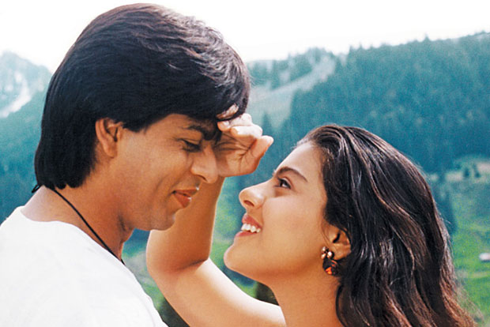
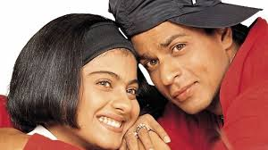
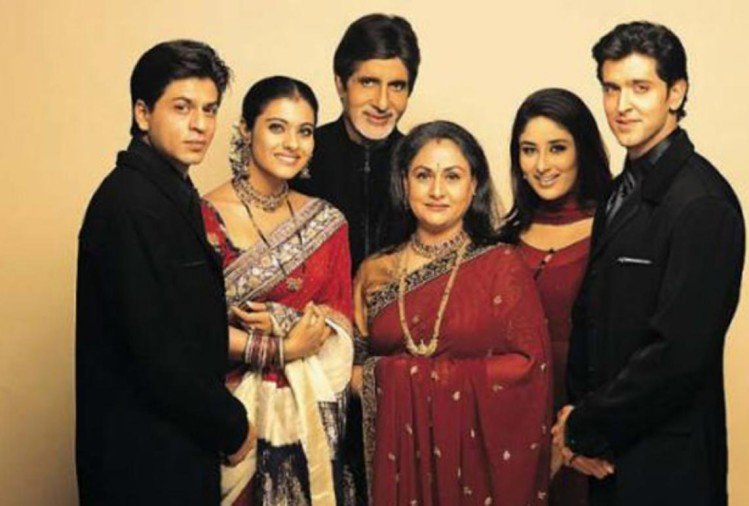
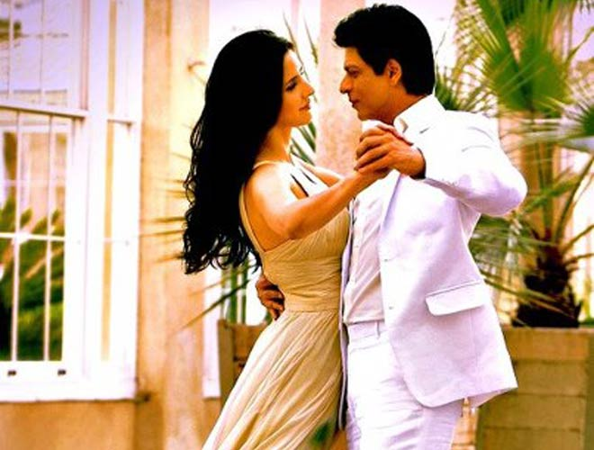

SRK HITS
|  | DILWALE DULHANIA LE JAYENGEDilwale Dulhania Le Jayenge (transl. The Big-Hearted Will Take the Bride), also known by the initialism DDLJ, is a 1995 Indian Hindi-language romance film, directed by Aditya Chopra in his directorial debut, produced by his father Yash Chopra, and written by Javed Siddiqui with Aditya Chopra. Released on 20 October 1995, the film stars Shah Rukh Khan and Kajol. |
|  | KUCH KUCH HOTA HAIKuch Kuch Hota Hai (transl. Something happens) also known as KKHH, is a 1998 Indian Hindi-language romantic comedy-drama film, written and directed by Karan Johar. It stars the popular on-screen pair of Shah Rukh Khan and Kajol in their fourth film together, along with Rani Mukerji and Salman Khan . The film also marks the film debut of Sana Saeed. The plot combines two love triangles set years apart. |
|  | KABHI KHUSHI KABHIE GHAMKabhi Khushi Kabhie Gham...(transl. Sometimes there is joy, sometimes there is sorrow...), also known as simply K3G, is a 2001 Indian Hindi-language melodrama film written and directed by Karan Johar and produced by Yash Johar. The film stars Amitabh Bachchan, Jaya Bachchan, Shah Rukh Khan, Kajol, Hrithik Roshan and Kareena Kapoor, with special appearance by Rani Mukerji. |
 |
KAL HO NA HOKal Ho Naa Ho (transl. Tomorrow May Never Come, Hindi pronunciation: [kəl ɦoː naː ɦoː]), also abbreviated as KHNH, is a 2003 Indian Hindi-language romantic comedy-drama film directed by Nikhil Advani, written by Karan Johar with dialogues by Niranjan Iyengar, and produced by Yash Johar.[5] The film stars Jaya Bachchan, Shah Rukh Khan, Saif Ali Khan, and Preity Zinta, with Sushma Seth, Reema Lagoo, Lillete Dubey, and Delnaaz Paul in supporting roles. |
|  | JAB TAK HAI JAANJab Tak Hai Jaan (transl. As long as there is life) is a 2012 Indian Hindi-language romantic drama film directed by Yash Chopra with screenplay, writing and production by his son Aditya under their banner Yash Raj Films that stars Shah Rukh Khan, Katrina Kaif and Anushka Sharma in lead roles.[1] |